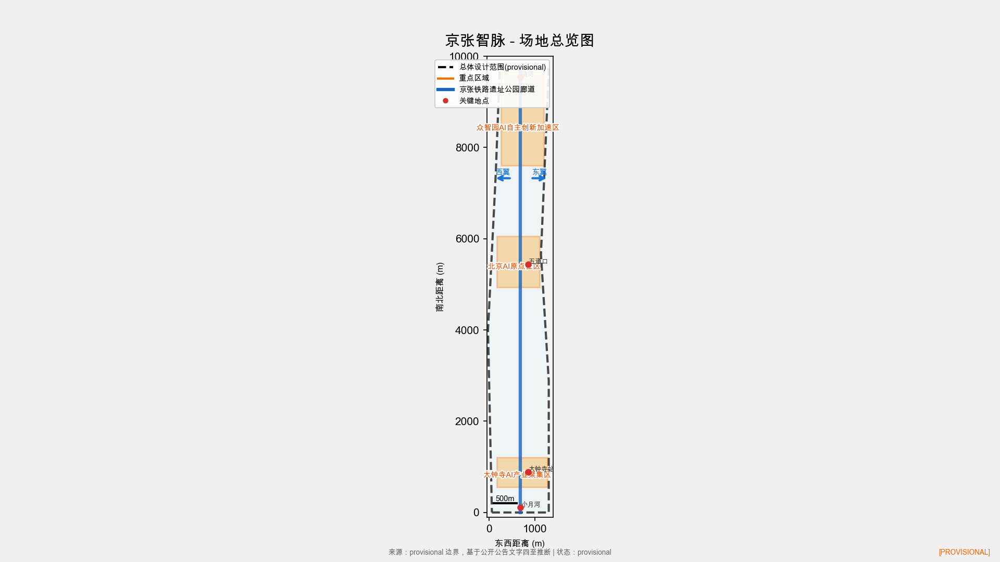
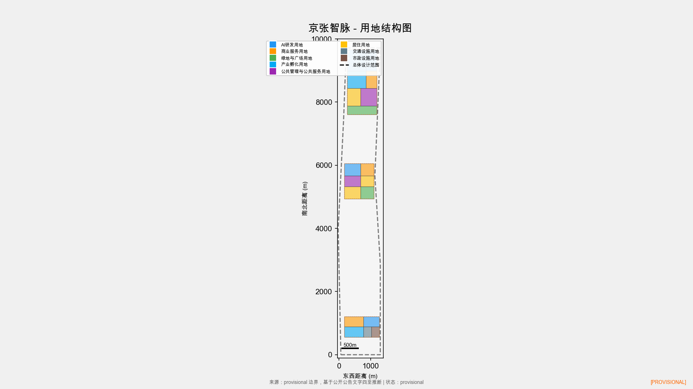
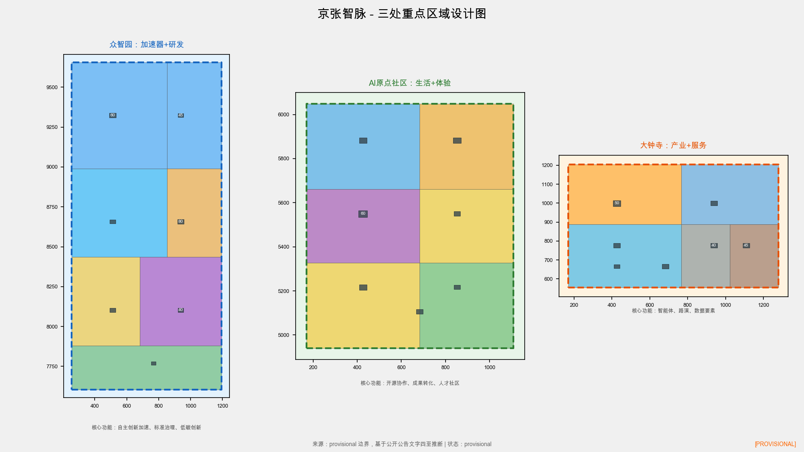
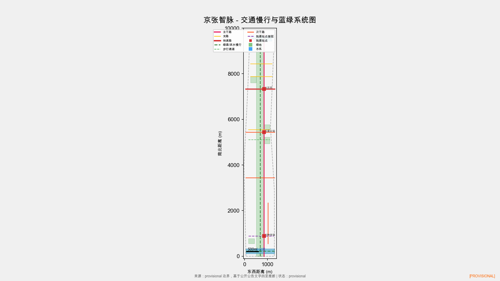
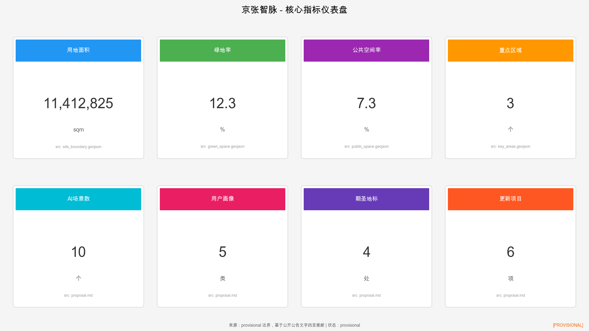

京张智脉以京张遗址公园为历史与公共空间主轴，以众智园、北京AI原点社区、大钟寺三处重点片区为创新锚点，以高校、企业、社区和轨道站点为日常网络，形成"一带三核、多点场景、蓝绿慢行复合环"的空间组织。方案覆盖总体设计范围约11.4平方公里，重点区域约368.4公顷，提出10个AI场景、5类用户画像、4处朝圣地标和6项更新项目。



百年京张铁路历史文化：京张铁路是中国人自主设计建造的第一条干线铁路，清华园火车站遗址是詹天佑工程精神的历史见证。方案以遗址公园为文化主轴，保留铁路记忆，将历史遗产转化为公共空间和创新交往载体。
中关村创新文化：海淀区汇聚清华、北大等高校和中科院等科研机构，是中国科技创新的发源地。方案延续近校创新传统，以AI原点社区为成果转化和人才社区锚点，缝合校区、园区和街区。
AI创新文化：以大模型、智能体、端侧算力为代表的新一代AI技术正在重塑城市生活。方案将AI场景嵌入日常空间，从慢行导航到生活服务，从安全治理到国际路演，形成可体验、可参与、可传播的AI城市文化。
三种文化的融合与共生：京张智脉不是三种文化的简单叠加，而是以铁路遗产为时间轴、以创新生态为空间网络、以AI场景为日常体验，形成"历史-创新-未来"的连续叙事。


本项目包含三层设计范围：总体设计范围（约11.4平方公里）、重点区域（众智园、AI原点社区、大钟寺，约368.4公顷）和重点地块（建筑级别设计深度）。
方案在三个重点片区布置21栋建筑，涵盖AI研发中心、孵化器、人才公寓、社区服务、商业配套等功能类型，建筑高度20-80米。
方案提出10个AI场景，覆盖开源发布、安全治理、端侧算力、慢行导航、国际路演、低碳创新、成果转化、数据要素、生活服务和全球活动周等方向。
本方案覆盖任务书要求的全部内容：空间结构、用地分区、建筑形态、AI场景设计、交通慢行系统、蓝绿公共空间、文化叙事、实施分期和核心指标复算。
方案已完成自检，所有必填章节、几何图层属性和核心指标均已补齐。自检结果见 self_check.json。
本方案基于临时边界（provisional boundary）推断，假设包括：官方精确边界尚未发布、控规条件待补充、现状建筑和权属数据待调查。完整假设清单见 assumptions.json。